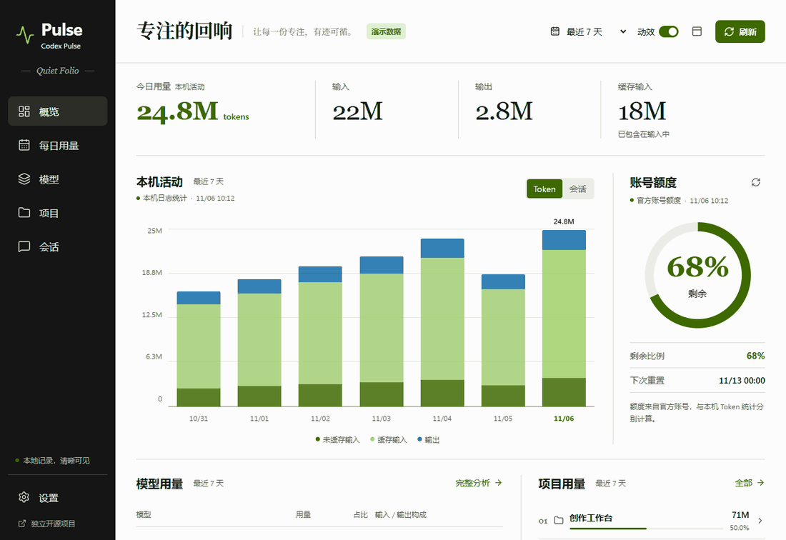

动静，按你的节奏。
数字缓动、图表生长、切页过渡与悬浮窗收放。顶栏可一键开关，设置可选“关闭 / 轻柔 / 生动”，并可遵循系统减少动态效果偏好。
播放实际界面动图（循环，约 1 MB）

01 · 概览
今日输入、输出、缓存，最近活动和官方账号额度分别显示。

02 · 每日用量
八周热力图、日期切换、分时记录，保留每日明细。

03 · 模型图谱
模型占比、缓存命中、用量轨迹与可选费用参考。

04 · 项目手记
按项目梳理投入，可继续查看相关会话。

05 · 会话脉络
支持搜索与筛选，只展示活动元数据。

06 · 偏好设置
动效预览、主题、语言、悬浮窗、登录启动与数据刷新。